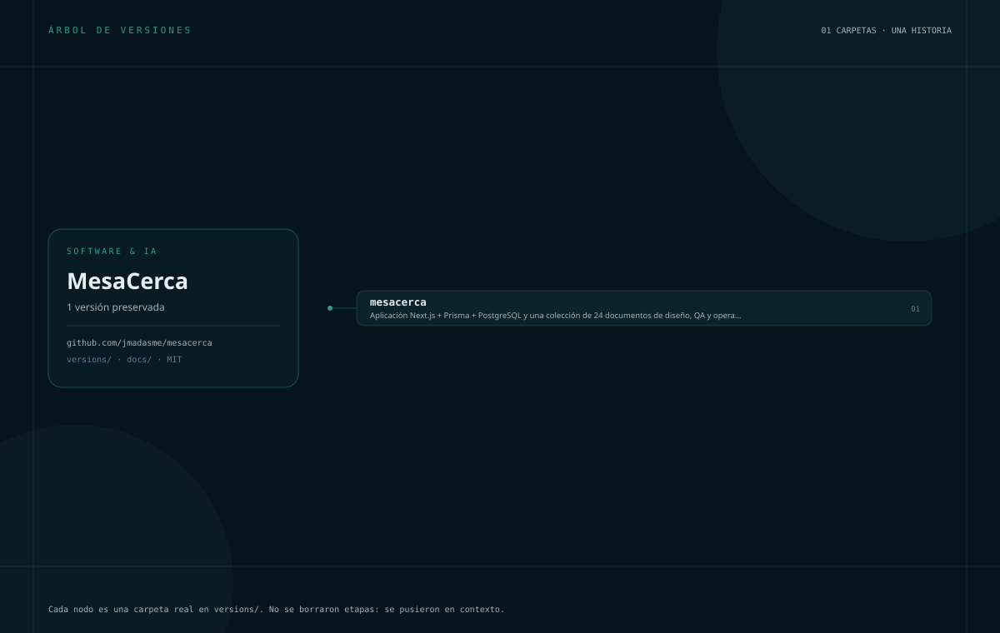
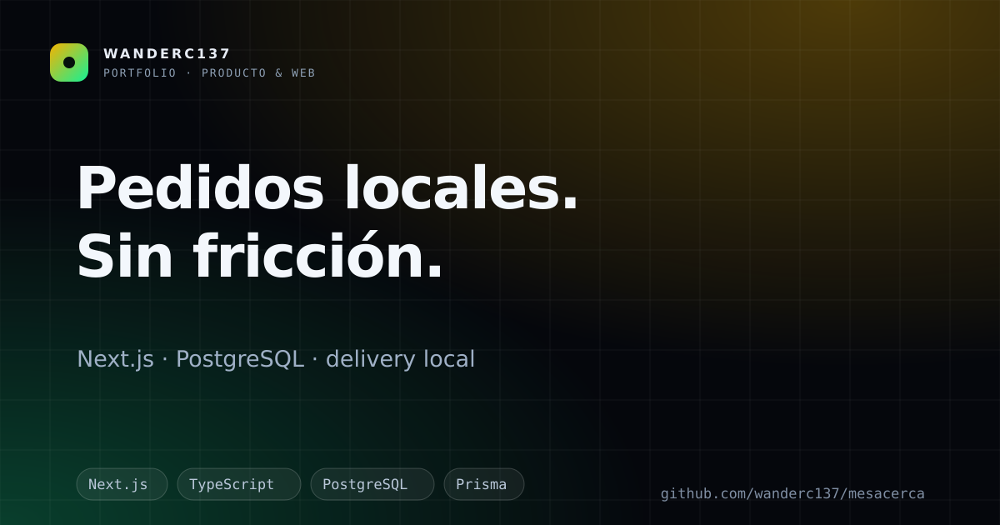
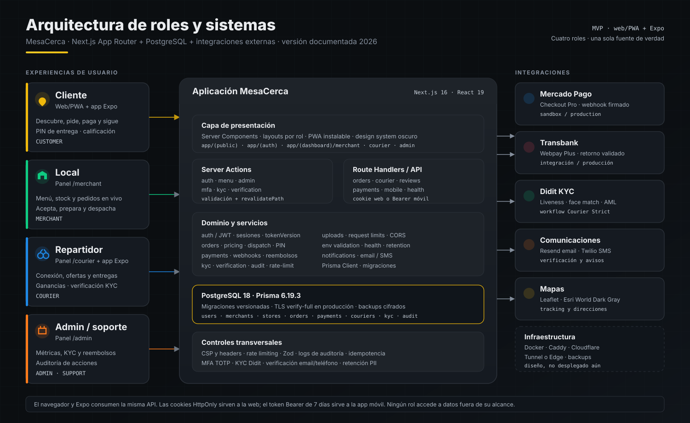
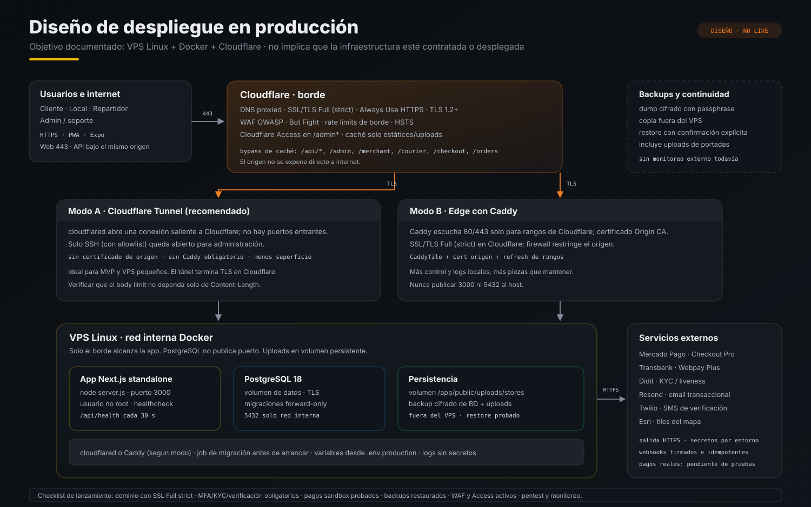
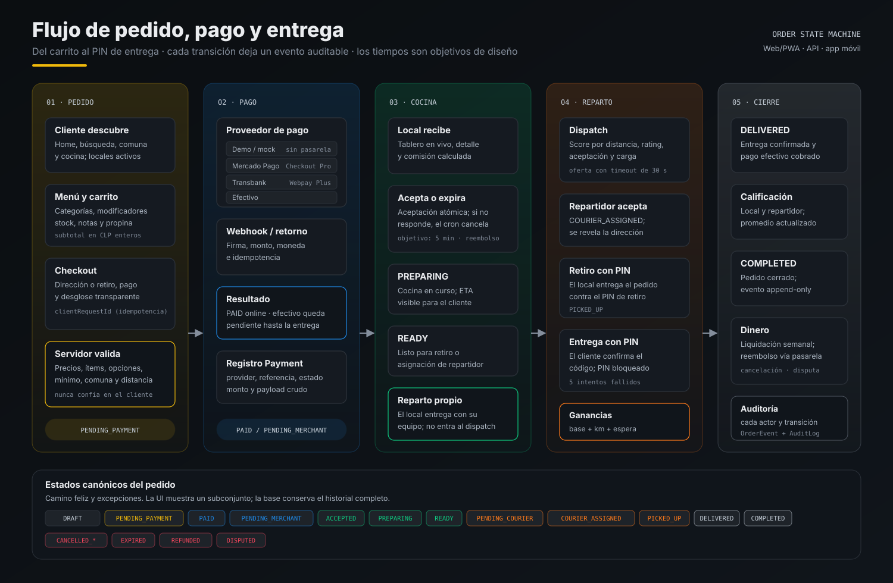
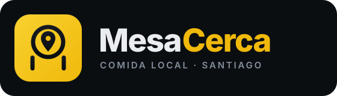
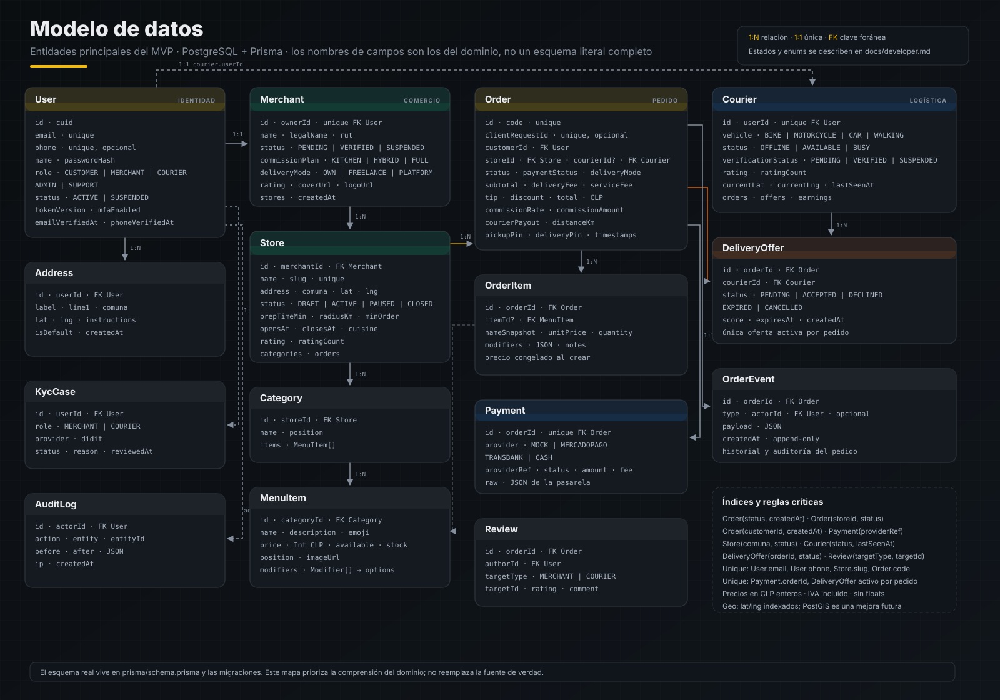

mesacerca
100 archivosAplicación Next.js + Prisma + PostgreSQL y una colección de 24 documentos de diseño, QA y operación.
Ver carpetaMarketplace de pedidos y delivery para Santiago: Next.js, TypeScript, Prisma y PostgreSQL, con 24 documentos de diseño.

MesaCerca es un marketplace gastronómico para Santiago con cuatro roles: cliente, local, repartidor y administración. La aplicación web cubre búsqueda, carrito, checkout, seguimiento, PIN de entrega y calificación; una app Expo reúne las experiencias de cliente y repartidor. Detrás hay Next.js, Prisma y PostgreSQL 18, con pagos hospedados, KYC externo y MFA para roles sensibles.
El proyecto ataca la comisión opaca de los marketplaces concentrados: pedidos directos, precios recalculados en el servidor y una operación documentada para desplegar en infraestructura propia. Su interés no está en la demo sino en el trabajo alrededor: dos auditorías de seguridad, cumplimiento chileno y veintitrés documentos de diseño, QA y operación. No está desplegado, no procesa pagos reales y la copia publicada omite directorios de runtime.
Un recorrido por el marketplace de reparto santiaguino: autenticación, MFA, pedidos idempotentes, tarifas, repartidores verificados y KYC.
Un recorrido por el marketplace de reparto santiaguino: autenticación, MFA, pedidos idempotentes, tarifas, repartidores verificados y KYC.
Los fragmentos son del código real del repositorio. El repo público no incluye lib/ ni prisma/, así que la conexión a base y el esquema no se muestran; las tarifas y comisiones son parámetros del modelo, no una oferta comercial.
Cada carpeta conserva una etapa del proyecto. No se borraron las anteriores: se pusieron en contexto.
Aplicación Next.js + Prisma + PostgreSQL y una colección de 24 documentos de diseño, QA y operación.
Ver carpetaMesaCerca conecta cocinas, clientes y repartidores con reglas claras, comisiones transparentes y operación híbrida.
Los locales dependen de plataformas que cobran comisiones altas, esconden los datos del cliente y deciden por ellos. Los repartidores compiten por migajas y los clientes pagan de más.
Un marketplace con comisión justa, reparto propio o freelance, datos del cliente para el local y una experiencia seria desde el primer clic. Web/PWA primero y app nativa después.
Del menú del local a la puerta del cliente, con cada actor informado.
Carga menú, precios, horarios y disponibilidad; elige reparto propio o red freelance.
Descubre locales por comuna y cocina, arma el carrito y paga online o en efectivo.
Recibe ofertas por turno, acepta, entrega y cobra; el tracking muestra el camino.
Verifica locales y repartidores, resuelve disputas y controla tarifas, zonas y finanzas.
Next.js y PostgreSQL sostienen la operación; la app Expo lleva la experiencia al teléfono.

Cada local decide si entrega con su propio equipo o con la red freelance.
Pedidos, pagos, tracking y disputas viven en el mismo panel administrativo.
Web/PWA para arrancar y app Expo/React Native para clientes y repartidores.
La operación completa, no solo la pantalla bonita.
Cliente, local, repartidor y administración con permisos y flujos separados.
Demo, Mercado Pago, Transbank Webpay y efectivo, con idempotencia y validación.
Mapa, timeline, PIN de entrega y calificación al final del pedido.
Sesiones revocables, rate limiting, MFA TOTP, KYC y minimización de PII.
La web instala como app y la versión nativa usa SecureStore y HTTPS obligatorio.
Docker, Caddy, Cloudflare, PostgreSQL TLS, migraciones y backups cifrados.
Los diagramas se mantienen en el repositorio y se actualizan con el código.





Next.js App Router y TypeScript en el frontend; PostgreSQL y Prisma en los datos; Expo/React Native en móvil; Docker, Caddy y Cloudflare en producción.
Next.js TypeScript PostgreSQL Prisma Expo Docker Caddy Cloudflare El MVP corre en modo demo por defecto. Las credenciales de pago y KYC reales no se versionan.
MesaCerca · arranque
$ npm install $ cp .env.example .env $ npx prisma migrate dev $ npm run dev
Cada decisión, cada límite y cada comando están documentados en el repositorio. Sin folletos: lo que funciona se muestra, lo que no, también.
Las primeras versiones existen para que estos errores no se repitan: cada una dejó una decisión de diseño verificable.
El MVP arrancó con SQLite por comodidad, pero producción necesitaba concurrencia, TLS, roles y migraciones reales. Mantener dos motores reproducía diferencias tarde y caras. Se adoptó PostgreSQL 18 desde el inicio, con Prisma y migraciones versionadas; el entorno local también usa TLS y un puerto dedicado.
Una cuenta con MFA podía entrar por la app sin el segundo factor porque el login móvil no consultaba mfaEnabled. En lugar de inventar un bypass se decidió rechazar esas cuentas con 403 y mostrar un mensaje claro. La limitación quedó declarada en la documentación.
La acción administrativa marcaba el pedido como REFUNDED sin llamar a la pasarela, así que el estado local contradecía al proveedor. Ahora el reembolso invoca al proveedor y solo confirma con respuesta; un pago posterior a una cancelación queda en REFUND_PENDING.
La firma se validaba solo si el secreto estaba configurado, de modo que un request falso podía simular un pago aprobado. Se exigió firma en producción, comparación timing-safe, validación de monto y moneda, e idempotencia. En sandbox la configuración pasó a ser explícita.
Seis criterios con la misma escala en todo el catálogo, para comparar sin marketing.
No. Es un proyecto con documentación de despliegue y auditorías, no un servicio operando.
El diseño, el negocio, el cumplimiento y la seguridad se trabajaron por separado.
No; se puede desplegar en VPS. La guía cubre ambos caminos.
Hay documentos de app y QA de dispositivos; el núcleo publicado es web.
El modelo y el cumplimiento están documentados; la integración de pagos debe validarse aparte.
Usá esta familia como base para mesacerca. Está documentada para que puedas entenderla, ejecutarla y continuarla sin adivinar.